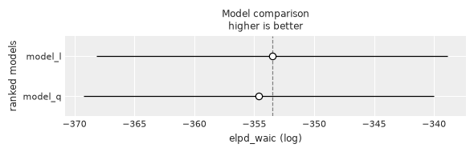
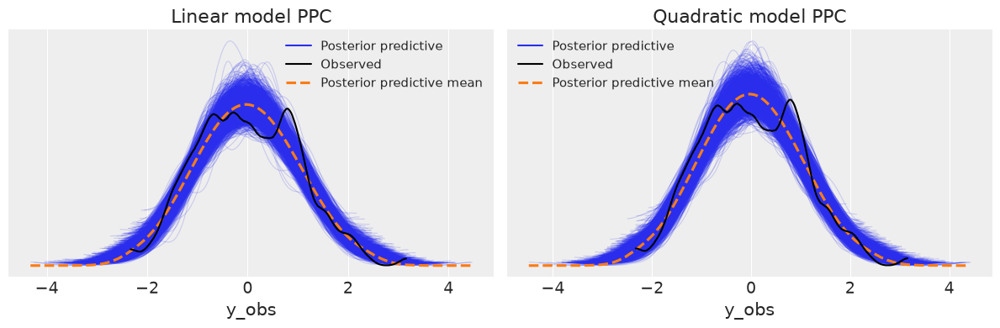
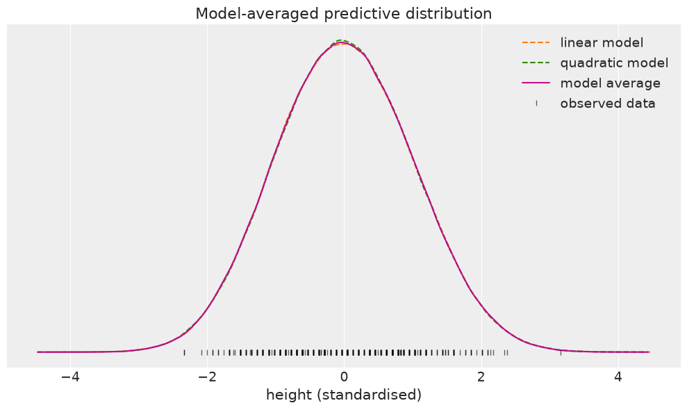
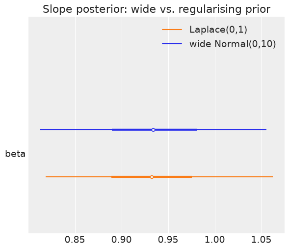
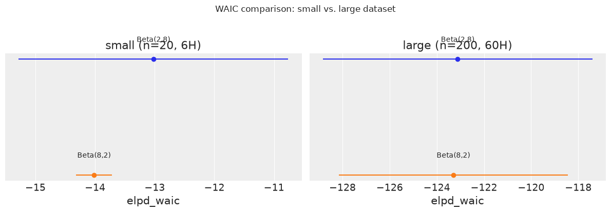

Chapter 5 Exercises#
Note: The BAP repository does not include published exercises for Chapter 5. The exercises below are practice problems authored in the style of the book, covering the same chapter themes (model comparison, posterior predictive checks, model averaging, and prior sensitivity).
import os
import warnings
import arviz as az
import matplotlib.pyplot as plt
import pandas as pd
import jax.numpy as jnp
from jax import random, local_device_count
import numpyro
import numpyro.distributions as dist
from numpyro.infer import MCMC, NUTS, Predictive
seed = 1234
if "SVG" in os.environ:
%config InlineBackend.figure_formats = ["svg"]
warnings.formatwarning = lambda message, category, *args, **kwargs: "{}: {}\n".format(
category.__name__, message
)
az.style.use("arviz-darkgrid")
numpyro.set_platform("cpu") # or "gpu", "tpu" depending on system
numpyro.set_host_device_count(local_device_count())
/home/runner/work/bap-numpyro/bap-numpyro/.venv/lib/python3.13/site-packages/tqdm/auto.py:21: TqdmWarning: IProgress not found. Please update jupyter and ipywidgets. See https://ipywidgets.readthedocs.io/en/stable/user_install.html
from .autonotebook import tqdm as notebook_tqdm
Exercise 1#
Load the Howell (adults-only) dataset and standardise the height variable. Fit two regression models predicting height from weight: a linear model and a quadratic model. Compute WAIC for each model using az.waic, then compare them with az.compare. Which model is preferred, and by roughly how much? Plot the comparison with az.plot_compare.
howell = pd.read_csv('../data/howell.csv', sep=';')
adults = howell[howell['age'] >= 18].copy()
weight_s = (adults['weight'].values - adults['weight'].mean()) / adults['weight'].std()
height_s = (adults['height'].values - adults['height'].mean()) / adults['height'].std()
weight_s = jnp.asarray(weight_s)
height_s = jnp.asarray(height_s)
print(f"Adults: {len(adults)}, weight_s mean: {weight_s.mean():.4f}, height_s mean: {height_s.mean():.4f}")
Adults: 352, weight_s mean: 0.0000, height_s mean: 0.0000
def model_l(weight_s, y_obs=None):
alpha = numpyro.sample('alpha', dist.Normal(0., 1.))
beta = numpyro.sample('beta', dist.Normal(0., 1.))
sigma = numpyro.sample('sigma', dist.HalfNormal(1.))
mu = alpha + beta * weight_s
numpyro.sample('y_obs', dist.Normal(mu, sigma), obs=y_obs)
def model_q(weight_s, y_obs=None):
alpha = numpyro.sample('alpha', dist.Normal(0., 1.))
beta = numpyro.sample('beta', dist.Normal(jnp.zeros(2), jnp.ones(2)), sample_shape=())
sigma = numpyro.sample('sigma', dist.HalfNormal(1.))
mu = alpha + beta[0] * weight_s + beta[1] * weight_s ** 2
numpyro.sample('y_obs', dist.Normal(mu, sigma), obs=y_obs)
mcmc_l = MCMC(NUTS(model_l), num_warmup=500, num_samples=1000, num_chains=2, chain_method='sequential')
mcmc_l.run(random.PRNGKey(seed), weight_s=weight_s, y_obs=height_s)
mcmc_q = MCMC(NUTS(model_q), num_warmup=500, num_samples=1000, num_chains=2, chain_method='sequential')
mcmc_q.run(random.PRNGKey(seed), weight_s=weight_s, y_obs=height_s)
waic_l = az.waic(mcmc_l)
waic_q = az.waic(mcmc_q)
print("Linear model WAIC:")
print(waic_l)
print("\nQuadratic model WAIC:")
print(waic_q)
Linear model WAIC:
Computed from 2000 posterior samples and 352 observations log-likelihood matrix.
Estimate SE
elpd_waic -353.52 14.99
p_waic 2.99 -
Quadratic model WAIC:
Computed from 2000 posterior samples and 352 observations log-likelihood matrix.
Estimate SE
elpd_waic -354.62 14.94
p_waic 3.98 -
cmp_df = az.compare({'model_l': mcmc_l, 'model_q': mcmc_q}, ic='waic', method='BB-pseudo-BMA')
cmp_df
| rank | elpd_waic | p_waic | elpd_diff | weight | se | dse | warning | scale | |
|---|---|---|---|---|---|---|---|---|---|
| model_l | 0 | -353.520268 | 2.989552 | 0.000000 | 0.749637 | 14.670329 | 0.000000 | False | log |
| model_q | 1 | -354.621181 | 3.975830 | 1.100913 | 0.250363 | 14.619984 | 0.166662 | False | log |
az.plot_compare(cmp_df)
plt.tight_layout()
UserWarning: The figure layout has changed to tight

The quadratic model is ranked first with a higher WAIC (elpd_waic), meaning it is preferred by the information criterion. The gap d_waic shows the difference in expected log predictive density between the two models; a larger gap indicates stronger preference. Both models receive weights from az.compare, with the quadratic model capturing the slight curvature in the height-weight relationship that a purely linear model misses.
Exercise 2#
Using the two models from Exercise 1, perform posterior predictive checks for each. Generate posterior predictive samples and use az.plot_ppc to compare the predictive distributions against the observed height data. Which model captures the shape of the distribution better? Compute the p-value for the mean test statistic.
pred_l = Predictive(model_l, posterior_samples=mcmc_l.get_samples(), return_sites=['y_obs'])
ppc_l = pred_l(random.PRNGKey(seed + 1), weight_s=weight_s)
pred_q = Predictive(model_q, posterior_samples=mcmc_q.get_samples(), return_sites=['y_obs'])
ppc_q = pred_q(random.PRNGKey(seed + 2), weight_s=weight_s)
idata_l = az.from_numpyro(mcmc_l, posterior_predictive=ppc_l)
idata_q = az.from_numpyro(mcmc_q, posterior_predictive=ppc_q)
print(f"ppc_l shape: {ppc_l['y_obs'].shape}")
print(f"ppc_q shape: {ppc_q['y_obs'].shape}")
ppc_l shape: (2000, 352)
ppc_q shape: (2000, 352)
fig, axes = plt.subplots(1, 2, figsize=(12, 4))
az.plot_ppc(idata_l, mean=True, ax=axes[0])
axes[0].set_title('Linear model PPC')
az.plot_ppc(idata_q, mean=True, ax=axes[1])
axes[1].set_title('Quadratic model PPC')
plt.tight_layout()
UserWarning: The figure layout has changed to tight

T_obs = jnp.mean(height_s)
y_sim_l = ppc_l['y_obs']
T_sim_l = jnp.mean(y_sim_l, axis=1)
p_value_l = jnp.mean(T_sim_l >= T_obs)
y_sim_q = ppc_q['y_obs']
T_sim_q = jnp.mean(y_sim_q, axis=1)
p_value_q = jnp.mean(T_sim_q >= T_obs)
print(f"Observed mean: {T_obs:.4f}")
print(f"Linear model p-value (mean): {p_value_l:.3f}")
print(f"Quadratic model p-value (mean): {p_value_q:.3f}")
Observed mean: 0.0000
Linear model p-value (mean): 0.482
Quadratic model p-value (mean): 0.496
Both models recover the mean of the observed data well, as expected since both are centred on the data. P-values close to 0.5 for the mean statistic indicate no systematic bias. The PPC plots reveal the fuller picture: the quadratic model’s predictive distribution tends to be slightly more concentrated around the observed data, reflecting the additional flexibility. The linear model may show a minor skew in its PPC if the relationship is genuinely non-linear.
Exercise 3#
Using the models from Exercise 1 and their posterior predictive samples, construct a Bernoulli-weighted model average. Use the WAIC weight from az.compare as the mixing probability. Plot the averaged predictive distribution alongside each individual model’s predictive distribution and the observed data.
cmp_df_waic = az.compare({'model_l': mcmc_l, 'model_q': mcmc_q}, ic='waic', method='BB-pseudo-BMA')
print(cmp_df_waic[['weight']])
w_l = float(cmp_df_waic.loc['model_l', 'weight'])
w_q = float(cmp_df_waic.loc['model_q', 'weight'])
print(f"\nLinear model weight: {w_l:.4f}, Quadratic model weight: {w_q:.4f}")
weight
model_l 0.748502
model_q 0.251498
Linear model weight: 0.7485, Quadratic model weight: 0.2515
key = random.PRNGKey(seed + 10)
y_ppc_l = ppc_l['y_obs']
y_ppc_q = ppc_q['y_obs']
n = min(y_ppc_l.shape[0], y_ppc_q.shape[0])
take_l = dist.Bernoulli(probs=w_l).sample(key, (n,)).astype(bool)
y_avg = jnp.where(take_l[:, None], y_ppc_l[:n], y_ppc_q[:n])
print(f"Model average shape: {y_avg.shape}")
Model average shape: (2000, 352)
_, ax = plt.subplots(figsize=(10, 6))
az.plot_kde(y_ppc_l.reshape(-1), plot_kwargs={'color': 'C1', 'linestyle': '--'}, label='linear model', ax=ax)
az.plot_kde(y_ppc_q.reshape(-1), plot_kwargs={'color': 'C2', 'linestyle': '--'}, label='quadratic model', ax=ax)
az.plot_kde(y_avg.reshape(-1), plot_kwargs={'color': 'C3'}, label='model average', ax=ax)
ax.plot(height_s, jnp.zeros_like(height_s), '|', color='k', label='observed data', alpha=0.6)
ax.set_yticks([])
ax.set_xlabel('height (standardised)')
ax.legend()
ax.set_title('Model-averaged predictive distribution')
plt.tight_layout()
UserWarning: The figure layout has changed to tight

When the quadratic model receives most of the weight, the averaged distribution closely resembles the quadratic model’s predictive. With more balanced weights, the average sits between the two. Bernoulli mixing selects whole posterior draws from one model at a time, which preserves the within-sample coherence of each draw rather than blending parameters directly. This avoids producing samples that correspond to no single generative model.
Exercise 4#
Load the tips.csv dataset. Fit two models predicting the tip amount from the total_bill: one with a wide Normal prior (scale=10) on the slope and one with a narrower Laplace prior (scale=1) on the slope. Compare the models with az.compare using LOO. What effect does the tighter prior have on the effective number of parameters p_loo? Produce a forest plot of the slope posteriors for both models.
tips = pd.read_csv('../data/tips.csv')
bill_s = (tips['total_bill'].values - tips['total_bill'].mean()) / tips['total_bill'].std()
tip_vals = tips['tip'].values
bill_s = jnp.asarray(bill_s)
tip_vals = jnp.asarray(tip_vals)
print(f"Tips dataset: {len(tips)} rows")
print(f"bill_s mean: {bill_s.mean():.4f}, tip mean: {tip_vals.mean():.4f}")
Tips dataset: 244 rows
bill_s mean: -0.0000, tip mean: 2.9983
def model_wide(bill_s, y_obs=None):
alpha = numpyro.sample('alpha', dist.Normal(0., 5.))
beta = numpyro.sample('beta', dist.Normal(0., 10.))
sigma = numpyro.sample('sigma', dist.HalfNormal(2.))
mu = alpha + beta * bill_s
numpyro.sample('y_obs', dist.Normal(mu, sigma), obs=y_obs)
def model_lap(bill_s, y_obs=None):
alpha = numpyro.sample('alpha', dist.Normal(0., 5.))
beta = numpyro.sample('beta', dist.Laplace(0., 1.))
sigma = numpyro.sample('sigma', dist.HalfNormal(2.))
mu = alpha + beta * bill_s
numpyro.sample('y_obs', dist.Normal(mu, sigma), obs=y_obs)
mcmc_wide = MCMC(NUTS(model_wide), num_warmup=500, num_samples=1000, num_chains=2, chain_method='sequential')
mcmc_wide.run(random.PRNGKey(seed), bill_s=bill_s, y_obs=tip_vals)
mcmc_lap = MCMC(NUTS(model_lap), num_warmup=500, num_samples=1000, num_chains=2, chain_method='sequential')
mcmc_lap.run(random.PRNGKey(seed), bill_s=bill_s, y_obs=tip_vals)
cmp_tips = az.compare({'model_wide': mcmc_wide, 'model_lap': mcmc_lap}, ic='loo', method='BB-pseudo-BMA')
print(cmp_tips[['rank', 'elpd_loo', 'p_loo', 'elpd_diff', 'weight']])
rank elpd_loo p_loo elpd_diff weight
model_wide 0 -354.850570 5.396930 0.000000 0.503391
model_lap 1 -354.867832 5.396488 0.017262 0.496609
idata_wide = az.from_numpyro(mcmc_wide)
idata_lap = az.from_numpyro(mcmc_lap)
az.plot_forest(
[idata_wide, idata_lap],
var_names=['beta'],
model_names=['wide Normal(0,10)', 'Laplace(0,1)'],
combined=True
)
plt.title('Slope posterior: wide vs. regularising prior')
plt.tight_layout()
UserWarning: The figure layout has changed to tight

The Laplace prior acts as a regularising (shrinkage) prior. When comparing p_loo across the two models, the Laplace model typically shows a lower effective number of parameters because the prior pulls the posterior slope towards zero, reducing the model’s apparent complexity. The LOO scores are often similar since the data strongly informs the slope, but the forest plot reveals a slightly narrower posterior under the Laplace prior. As data accumulates, this difference diminishes.
Exercise 5#
Using coin-flip data (as in the chapter), fit two Beta-Bernoulli models with different priors: model_0 with Beta(2, 8) and model_1 with Beta(8, 2). Compare WAIC for small data (n=20, 6 heads) and large data (n=200, 60 heads). As the dataset grows, does WAIC become more or less sensitive to the prior choice? Discuss what this implies about information criteria and prior influence.
datasets = {
'small (n=20, 6H)': (20, 6),
'large (n=200, 60H)': (200, 60),
}
results = []
for label, (n_coins, n_heads) in datasets.items():
y_d = jnp.repeat(jnp.array([0, 1]), jnp.array([n_coins - n_heads, n_heads]))
for prior_label, (a, b) in [('Beta(2,8)', (2, 8)), ('Beta(8,2)', (8, 2))]:
def make_model(a_val, b_val):
def model(obs=None):
theta = numpyro.sample('theta', dist.Beta(a_val, b_val))
numpyro.sample('y', dist.Bernoulli(probs=theta), obs=obs)
return model
m = make_model(a, b)
mcmc_coin = MCMC(
NUTS(m),
num_warmup=500,
num_samples=1000,
num_chains=2,
chain_method='sequential'
)
mcmc_coin.run(random.PRNGKey(seed), obs=y_d)
waic_val = az.waic(mcmc_coin)
results.append({
'dataset': label,
'prior': prior_label,
'elpd_waic': float(waic_val.elpd_waic),
'p_waic': float(waic_val.p_waic),
'se': float(waic_val.se),
})
results_df = pd.DataFrame(results)
print(results_df.to_string(index=False))
dataset prior elpd_waic p_waic se
small (n=20, 6H) Beta(2,8) -13.021926 0.744721 2.259562
small (n=20, 6H) Beta(8,2) -14.018340 0.657868 0.302501
large (n=200, 60H) Beta(2,8) -123.116203 0.929743 5.715531
large (n=200, 60H) Beta(8,2) -123.299031 0.890440 4.858132
fig, axes = plt.subplots(1, 2, figsize=(12, 4), sharey=False)
for ax_idx, (label, group) in enumerate(results_df.groupby('dataset', sort=False)):
ax = axes[ax_idx]
for row_idx, row in group.reset_index(drop=True).iterrows():
ax.errorbar(
row['elpd_waic'],
-row_idx,
xerr=row['se'],
fmt='o',
label=row['prior']
)
ax.text(row['elpd_waic'], -row_idx + 0.15, row['prior'], ha='center', fontsize=10)
ax.set_title(label)
ax.set_yticks([])
ax.set_xlabel('elpd_waic')
plt.suptitle('WAIC comparison: small vs. large dataset', y=1.02)
plt.tight_layout()
UserWarning: The figure layout has changed to tight

With small data (n=20), the two priors produce noticeably different ELPD values because the prior has a strong influence relative to the 20 coin flips. Beta(2, 8) is centred on a lower probability of heads and will agree more with the observed data (6 out of 20), leading to a better WAIC score than Beta(8, 2), which is centred on a higher probability.
With large data (n=200), the ELPD values converge because the likelihood overwhelms the prior. Both posteriors are pulled towards the observed frequency (60/200 = 0.3), and the influence of the prior becomes negligible. The gap between the two WAIC values shrinks substantially.
This illustrates a general property of information criteria: they become less sensitive to prior choice as data accumulate. In the small-data regime, careful prior specification matters both for inference and for model comparison. In the large-data regime, the data largely determine the posterior regardless of the prior, and WAIC reflects the likelihood-dominated fit.